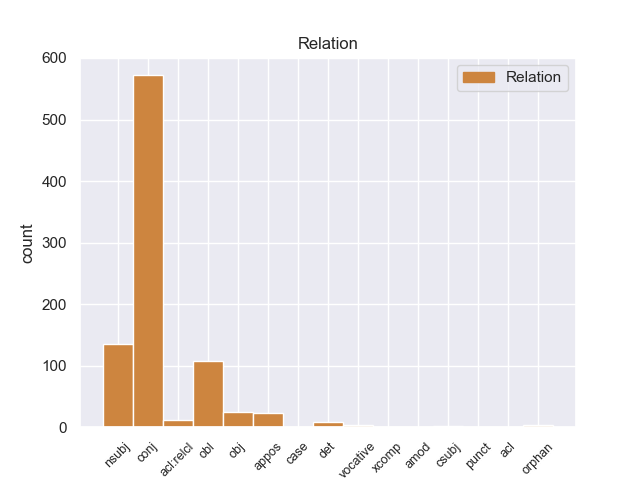
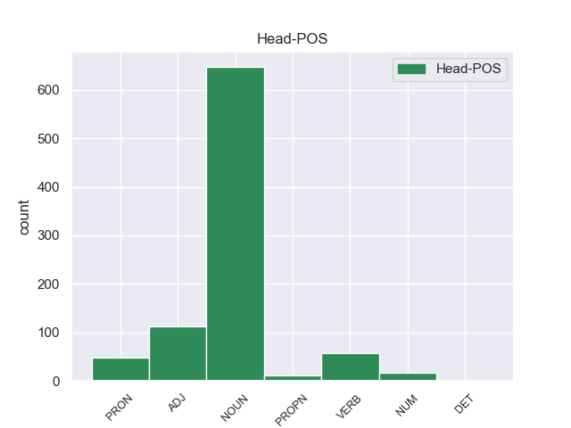
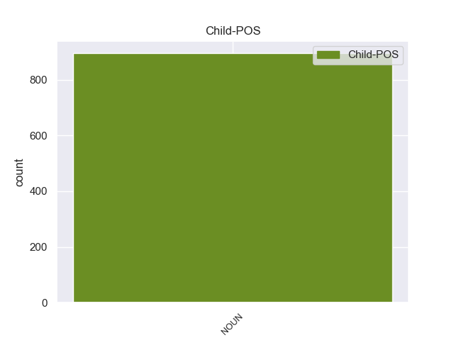

Distribution of features within this leaf



Agreement Rules sorted by frequency.
- When the dependent token is the conjunct(conj) of the head token, and the dependent token is NOUN.
1 « _ _ _ _ 0 _ _ _
2 Δεκαεννέα _ _ _ _ 0 _ _ _
3 κρατούμενοι _ _ _ _ 0 _ _ _
4 , _ _ _ _ 0 _ _ _
5 μέλη _ _ _ _ 0 _ _ _
6 της _ _ _ _ 0 _ _ _
7 Αλ _ _ _ _ 0 _ _ _
8 Κάιντα _ _ _ _ 0 _ _ _
9 και _ _ _ _ 0 _ _ _
10 της _ _ _ _ 0 _ _ _
11 Ανσάρ _ _ _ _ 0 _ _ _
12 αλ-Σούνα _ _ _ _ 0 _ _ _
13 , _ _ _ _ 0 _ _ _
14 απέδρασαν _ _ _ _ 0 _ _ _
15 σ _ _ _ _ 0 _ _ _
16 τις _ _ _ _ 0 _ _ _
17 03:30 _ _ _ _ 0 _ _ _
18 από _ _ _ _ 0 _ _ _
19 τη _ _ _ _ 0 _ _ _
20 φυλακή _ _ _ _ 0 _ _ _
21 , _ _ _ _ 0 _ _ _
22 αφού _ _ _ _ 0 _ _ _
23 αποκοίμισαν _ _ _ _ 0 _ _ _
24 τους _ _ _ _ 0 _ _ _
25 δεσμοφύλακες δεσμοφύλακας NOUN NOUN Case=Acc|Gender=Masc|Number=Plur 0 _ _ _
26 και _ _ _ _ 0 _ _ _
27 τους _ _ _ _ 0 _ _ _
28 υπόλοιπους _ _ _ _ 0 _ _ _
29 κρατούμενους κρατούμενος NOUN NOUN Case=Acc|Gender=Masc|Number=Plur 25 conj _ SpaceAfter=No
30 . _ _ _ _ 0 _ _ _
1 Πιστεύω _ _ _ _ 0 _ _ _
2 ότι _ _ _ _ 0 _ _ _
3 όλες _ _ _ _ 0 _ _ _
4 οι _ _ _ _ 0 _ _ _
5 προσπάθειες προσπάθεια NOUN NOUN Case=Nom|Gender=Fem|Number=Plur 13 nsubj _ _
6 για _ _ _ _ 0 _ _ _
7 να _ _ _ _ 0 _ _ _
8 θέσουμε _ _ _ _ 0 _ _ _
9 τέλος _ _ _ _ 0 _ _ _
10 σ' _ _ _ _ 0 _ _ _
11 αυτό _ _ _ _ 0 _ _ _
12 είναι _ _ _ _ 0 _ _ _
13 λίγες λίγος ADJ ADJ Case=Nom|Gender=Fem|Number=Plur 0 _ _ _
14 . _ _ _ _ 0 _ _ _
1 Ακτιβιστές _ _ _ _ 0 _ _ _
2 αναφέρουν _ _ _ _ 0 _ _ _
3 ότι _ _ _ _ 0 _ _ _
4 « _ _ _ _ 0 _ _ _
5 ολόκληρη _ _ _ _ 0 _ _ _
6 η _ _ _ _ 0 _ _ _
7 πόλη _ _ _ _ 0 _ _ _
8 της _ _ _ _ 0 _ _ _
9 Χομς _ _ _ _ 0 _ _ _
10 είναι _ _ _ _ 0 _ _ _
11 αντιμέτωπη αντιμέτωπος ADJ ADJ Case=Nom|Gender=Fem|Number=Sing 0 _ _ _
12 με _ _ _ _ 0 _ _ _
13 μια _ _ _ _ 0 _ _ _
14 ανθρωπιστική _ _ _ _ 0 _ _ _
15 καταστροφή καταστροφή NOUN NOUN Case=Acc|Gender=Fem|Number=Sing 11 obl _ SpaceAfter=No
16 . _ _ _ _ 0 _ _ _
1 Λυπάμαι _ _ _ _ 0 _ _ _
2 , _ _ _ _ 0 _ _ _
3 άλλωστε _ _ _ _ 0 _ _ _
4 , _ _ _ _ 0 _ _ _
5 που _ _ _ _ 0 _ _ _
6 δεν _ _ _ _ 0 _ _ _
7 αγωνιστήκαμε _ _ _ _ 0 _ _ _
8 για _ _ _ _ 0 _ _ _
9 τη _ _ _ _ 0 _ _ _
10 διατήρηση _ _ _ _ 0 _ _ _
11 μιας _ _ _ _ 0 _ _ _
12 συγκεκριμένης _ _ _ _ 0 _ _ _
13 ποσόστωσης _ _ _ _ 0 _ _ _
14 για _ _ _ _ 0 _ _ _
15 τις _ _ _ _ 0 _ _ _
16 χώρες _ _ _ _ 0 _ _ _
17 ΑΚΕ _ _ _ _ 0 _ _ _
18 , _ _ _ _ 0 _ _ _
19 η _ _ _ _ 0 _ _ _
20 οποία _ _ _ _ 0 _ _ _
21 θα _ _ _ _ 0 _ _ _
22 τους _ _ _ _ 0 _ _ _
23 εγγυόταν _ _ _ _ 0 _ _ _
24 από _ _ _ _ 0 _ _ _
25 μόνη μόνη VERB VERB Aspect=Perf|Case=Nom|Gender=Fem|Number=Sing|VerbForm=Part|Voice=Pass 0 _ _ _
26 της _ _ _ _ 0 _ _ _
27 την _ _ _ _ 0 _ _ _
28 πρόσβαση πρόσβαση NOUN NOUN Case=Acc|Gender=Fem|Number=Sing 25 obj _ _
29 σ _ _ _ _ 0 _ _ _
30 την _ _ _ _ 0 _ _ _
31 αγορά _ _ _ _ 0 _ _ _
32 . _ _ _ _ 0 _ _ _
1 Σ _ _ _ _ 0 _ _ _
2 την _ _ _ _ 0 _ _ _
3 Παναγία _ _ _ _ 0 _ _ _
4 της _ _ _ _ 0 _ _ _
5 Άμμου _ _ _ _ 0 _ _ _
6 βρίσκεται _ _ _ _ 0 _ _ _
7 η _ _ _ _ 0 _ _ _
8 Παναγία Παναγία PROPN PROPN Case=Nom|Gender=Fem|Number=Sing 0 _ _ _
9 η _ _ _ _ 0 _ _ _
10 Μοναχή _ _ _ _ 0 _ _ _
11 , _ _ _ _ 0 _ _ _
12 μια _ _ _ _ 0 _ _ _
13 σπάνια _ _ _ _ 0 _ _ _
14 απεικόνιση απεικόνιση NOUN NOUN Case=Nom|Gender=Fem|Number=Sing 8 appos _ _
15 της _ _ _ _ 0 _ _ _
16 Παναγίας _ _ _ _ 0 _ _ _
17 χωρίς _ _ _ _ 0 _ _ _
18 το _ _ _ _ 0 _ _ _
19 Θείο _ _ _ _ 0 _ _ _
20 Βρέφος _ _ _ _ 0 _ _ _
21 , _ _ _ _ 0 _ _ _
22 η _ _ _ _ 0 _ _ _
23 Παναγία _ _ _ _ 0 _ _ _
24 η _ _ _ _ 0 _ _ _
25 Κόγχη _ _ _ _ 0 _ _ _
26 πιθανολογείται _ _ _ _ 0 _ _ _
27 πως _ _ _ _ 0 _ _ _
28 κτίστηκε _ _ _ _ 0 _ _ _
29 σ _ _ _ _ 0 _ _ _
30 τη _ _ _ _ 0 _ _ _
31 θέση _ _ _ _ 0 _ _ _
32 του _ _ _ _ 0 _ _ _
33 ιερού _ _ _ _ 0 _ _ _
34 της _ _ _ _ 0 _ _ _
35 Εκβατήριας _ _ _ _ 0 _ _ _
36 Αρτέμιδος _ _ _ _ 0 _ _ _
37 ενώ _ _ _ _ 0 _ _ _
38 ο _ _ _ _ 0 _ _ _
39 Άγιος _ _ _ _ 0 _ _ _
40 Γεώργιος _ _ _ _ 0 _ _ _
41 ο _ _ _ _ 0 _ _ _
42 Αφέντης _ _ _ _ 0 _ _ _
43 κτίστηκε _ _ _ _ 0 _ _ _
44 το _ _ _ _ 0 _ _ _
45 17ο _ _ _ _ 0 _ _ _
46 αιώνα _ _ _ _ 0 _ _ _
47 και _ _ _ _ 0 _ _ _
48 έχει _ _ _ _ 0 _ _ _
49 πολλές _ _ _ _ 0 _ _ _
50 σπάνιες _ _ _ _ 0 _ _ _
51 και _ _ _ _ 0 _ _ _
52 αξιόλογες _ _ _ _ 0 _ _ _
53 εικόνες _ _ _ _ 0 _ _ _
54 . _ _ _ _ 0 _ _ _
1 Κυρία _ _ _ _ 0 _ _ _
2 Πρόεδρε πρόεδρος NOUN NOUN Case=Voc|Gender=Masc|Number=Sing 5 det _ SpaceAfter=No
3 , _ _ _ _ 0 _ _ _
4 αξιότιμοι _ _ _ _ 0 _ _ _
5 συνάδελφοι συνάδελφος NOUN NOUN Case=Nom|Gender=Masc|Number=Plur 0 _ _ _
6 , _ _ _ _ 0 _ _ _
7 θα _ _ _ _ 0 _ _ _
8 σας _ _ _ _ 0 _ _ _
9 ήμουν _ _ _ _ 0 _ _ _
10 ευγνώμων _ _ _ _ 0 _ _ _
11 εάν _ _ _ _ 0 _ _ _
12 μπορούσαμε _ _ _ _ 0 _ _ _
13 να _ _ _ _ 0 _ _ _
14 ψηφίσουμε _ _ _ _ 0 _ _ _
15 για _ _ _ _ 0 _ _ _
16 την _ _ _ _ 0 _ _ _
17 πρόταση _ _ _ _ 0 _ _ _
18 ψηφίσματος _ _ _ _ 0 _ _ _
19 της _ _ _ _ 0 _ _ _
20 συναδέλφου _ _ _ _ 0 _ _ _
21 Caroline _ _ _ _ 0 _ _ _
22 Jackson _ _ _ _ 0 _ _ _
23 από _ _ _ _ 0 _ _ _
24 την _ _ _ _ 0 _ _ _
25 Επιτροπή _ _ _ _ 0 _ _ _
26 Περιβάλλοντος _ _ _ _ 0 _ _ _
27 , _ _ _ _ 0 _ _ _
28 πράγμα _ _ _ _ 0 _ _ _
29 που _ _ _ _ 0 _ _ _
30 είναι _ _ _ _ 0 _ _ _
31 υπόθεση _ _ _ _ 0 _ _ _
32 τριών _ _ _ _ 0 _ _ _
33 τεσσάρων _ _ _ _ 0 _ _ _
34 λεπτών _ _ _ _ 0 _ _ _
35 . _ _ _ _ 0 _ _ _
1 Τρίτον _ _ _ _ 0 _ _ _
2 , _ _ _ _ 0 _ _ _
3 πρέπει _ _ _ _ 0 _ _ _
4 να _ _ _ _ 0 _ _ _
5 καταφέρουμε _ _ _ _ 0 _ _ _
6 να _ _ _ _ 0 _ _ _
7 συμπεριληφθεί _ _ _ _ 0 _ _ _
8 οριστικά _ _ _ _ 0 _ _ _
9 ο _ _ _ _ 0 _ _ _
10 Νότιος _ _ _ _ 0 _ _ _
11 Καύκασος _ _ _ _ 0 _ _ _
12 σ _ _ _ _ 0 _ _ _
13 την _ _ _ _ 0 _ _ _
14 ημερήσια _ _ _ _ 0 _ _ _
15 διάταξη _ _ _ _ 0 _ _ _
16 των _ _ _ _ 0 _ _ _
17 σχέσεών _ _ _ _ 0 _ _ _
18 μας _ _ _ _ 0 _ _ _
19 με _ _ _ _ 0 _ _ _
20 τους _ _ _ _ 0 _ _ _
21 κυριότερους _ _ _ _ 0 _ _ _
22 συμμετέχοντες _ _ _ _ 0 _ _ _
23 που _ _ _ _ 0 _ _ _
24 ενδιαφέρονται _ _ _ _ 0 _ _ _
25 για _ _ _ _ 0 _ _ _
26 την _ _ _ _ 0 _ _ _
27 περιοχή _ _ _ _ 0 _ _ _
28 , _ _ _ _ 0 _ _ _
29 όπως _ _ _ _ 0 _ _ _
30 η _ _ _ _ 0 _ _ _
31 Ρωσία _ _ _ _ 0 _ _ _
32 , _ _ _ _ 0 _ _ _
33 η _ _ _ _ 0 _ _ _
34 Τουρκία _ _ _ _ 0 _ _ _
35 , _ _ _ _ 0 _ _ _
36 το _ _ _ _ 0 _ _ _
37 Ιράν _ _ _ _ 0 _ _ _
38 και _ _ _ _ 0 _ _ _
39 οι _ _ _ _ 0 _ _ _
40 Ηνωμένες _ _ _ _ 0 _ _ _
41 Πολιτείες _ _ _ _ 0 _ _ _
42 , _ _ _ _ 0 _ _ _
43 πράγμα πράγμα NOUN NOUN Case=Nom|Gender=Neut|Number=Sing 0 _ _ _
44 που _ _ _ _ 0 _ _ _
45 , _ _ _ _ 0 _ _ _
46 όπως _ _ _ _ 0 _ _ _
47 είπαν _ _ _ _ 0 _ _ _
48 μερικοί _ _ _ _ 0 _ _ _
49 από _ _ _ _ 0 _ _ _
50 σας _ _ _ _ 0 _ _ _
51 σ _ _ _ _ 0 _ _ _
52 τις _ _ _ _ 0 _ _ _
53 παρεμβάσεις _ _ _ _ 0 _ _ _
54 τους _ _ _ _ 0 _ _ _
55 , _ _ _ _ 0 _ _ _
56 είναι _ _ _ _ 0 _ _ _
57 και _ _ _ _ 0 _ _ _
58 προς _ _ _ _ 0 _ _ _
59 το _ _ _ _ 0 _ _ _
60 δικό _ _ _ _ 0 _ _ _
61 μας _ _ _ _ 0 _ _ _
62 συμφέρον συμφέρον NOUN NOUN Case=Acc|Gender=Neut|Number=Sing 43 acl:relcl _ SpaceAfter=No
63 , _ _ _ _ 0 _ _ _
64 μεταξύ _ _ _ _ 0 _ _ _
65 άλλων _ _ _ _ 0 _ _ _
66 για _ _ _ _ 0 _ _ _
67 λόγους _ _ _ _ 0 _ _ _
68 που _ _ _ _ 0 _ _ _
69 σχετίζονται _ _ _ _ 0 _ _ _
70 με _ _ _ _ 0 _ _ _
71 τον _ _ _ _ 0 _ _ _
72 ενεργειακό _ _ _ _ 0 _ _ _
73 εφοδιασμό _ _ _ _ 0 _ _ _
74 . _ _ _ _ 0 _ _ _
1 Η _ _ _ _ 0 _ _ _
2 πρώτη _ _ _ _ 0 _ _ _
3 ειδοποίηση _ _ _ _ 0 _ _ _
4 θα _ _ _ _ 0 _ _ _
5 γίνεται _ _ _ _ 0 _ _ _
6 με _ _ _ _ 0 _ _ _
7 την _ _ _ _ 0 _ _ _
8 παρέλευση _ _ _ _ 0 _ _ _
9 πέντε _ _ _ _ 0 _ _ _
10 χρόνων _ _ _ _ 0 _ _ _
11 από _ _ _ _ 0 _ _ _
12 την _ _ _ _ 0 _ _ _
13 ημερομηνία _ _ _ _ 0 _ _ _
14 που _ _ _ _ 0 _ _ _
15 ανοίχθηκε _ _ _ _ 0 _ _ _
16 ο _ _ _ _ 0 _ _ _
17 λογαριασμός _ _ _ _ 0 _ _ _
18 , _ _ _ _ 0 _ _ _
19 η _ _ _ _ 0 _ _ _
20 δεύτερη _ _ _ _ 0 _ _ _
21 σ _ _ _ _ 0 _ _ _
22 την _ _ _ _ 0 _ _ _
23 10ετία _ _ _ _ 0 _ _ _
24 και _ _ _ _ 0 _ _ _
25 η _ _ _ _ 0 _ _ _
26 τρίτη τρίτος NUM NUM Case=Nom|Gender=Fem|Number=Sing|NumType=Ord 0 _ _ _
27 σ _ _ _ _ 0 _ _ _
28 την _ _ _ _ 0 _ _ _
29 15ετία 15ετία NOUN NOUN Case=Acc|Gender=Fem|Number=Sing 26 orphan _ SpaceAfter=No
30 . _ _ _ _ 0 _ _ _
1 Αξιοσημείωτο αξιοσημείωτος ADJ ADJ Case=Acc|Gender=Masc|Number=Sing 0 _ _ _
2 είναι _ _ _ _ 0 _ _ _
3 ότι _ _ _ _ 0 _ _ _
4 θα _ _ _ _ 0 _ _ _
5 είναι _ _ _ _ 0 _ _ _
6 ο _ _ _ _ 0 _ _ _
7 πρώτος _ _ _ _ 0 _ _ _
8 άνδρας άντρας NOUN NOUN Case=Nom|Gender=Masc|Number=Sing 1 csubj _ _
9 μονάρχης _ _ _ _ 0 _ _ _
10 της _ _ _ _ 0 _ _ _
11 Ολλανδίας _ _ _ _ 0 _ _ _
12 μετά _ _ _ _ 0 _ _ _
13 από _ _ _ _ 0 _ _ _
14 100 _ _ _ _ 0 _ _ _
15 χρόνια _ _ _ _ 0 _ _ _
16 . _ _ _ _ 0 _ _ _
1 Αυτή _ _ _ _ 0 _ _ _
2 είναι _ _ _ _ 0 _ _ _
3 η ο VERB VERB Aspect=Perf|Case=Acc|Gender=Fem|Number=Sing|VerbForm=Part|Voice=Pass 0 _ _ _
4 βάση βάση NOUN NOUN Case=Acc|Gender=Fem|Number=Sing 3 xcomp _ _
5 των _ _ _ _ 0 _ _ _
6 τροπολογιών _ _ _ _ 0 _ _ _
7 που _ _ _ _ 0 _ _ _
8 προτείνουμε _ _ _ _ 0 _ _ _
9 η _ _ _ _ 0 _ _ _
10 κ _ _ _ _ 0 _ _ _
11 . _ _ _ _ 0 _ _ _
12 Berger _ _ _ _ 0 _ _ _
13 και _ _ _ _ 0 _ _ _
14 εγώ _ _ _ _ 0 _ _ _
15 , _ _ _ _ 0 _ _ _
16 εκφράζοντας _ _ _ _ 0 _ _ _
17 τις _ _ _ _ 0 _ _ _
18 απόψεις _ _ _ _ 0 _ _ _
19 της _ _ _ _ 0 _ _ _
20 Επιτροπής _ _ _ _ 0 _ _ _
21 Απασχόλησης _ _ _ _ 0 _ _ _
22 και _ _ _ _ 0 _ _ _
23 Κοινωνικών _ _ _ _ 0 _ _ _
24 Υποθέσεων _ _ _ _ 0 _ _ _
25 . _ _ _ _ 0 _ _ _
1 απαιτείται _ _ _ _ 0 _ _ _
2 επίσης _ _ _ _ 0 _ _ _
3 να _ _ _ _ 0 _ _ _
4 μεταβεί _ _ _ _ 0 _ _ _
5 σ _ _ _ _ 0 _ _ _
6 τη _ _ _ _ 0 _ _ _
7 Ερυθραία _ _ _ _ 0 _ _ _
8 μια _ _ _ _ 0 _ _ _
9 αντιπροσωπεία _ _ _ _ 0 _ _ _
10 της _ _ _ _ 0 _ _ _
11 Ευρώπης _ _ _ _ 0 _ _ _
12 , _ _ _ _ 0 _ _ _
13 της _ _ _ _ 0 _ _ _
14 τρόικας _ _ _ _ 0 _ _ _
15 , _ _ _ _ 0 _ _ _
16 και _ _ _ _ 0 _ _ _
17 να _ _ _ _ 0 _ _ _
18 επανεξετασθούν _ _ _ _ 0 _ _ _
19 οι _ _ _ _ 0 _ _ _
20 σχέσεις _ _ _ _ 0 _ _ _
21 με _ _ _ _ 0 _ _ _
22 αυτή _ _ _ _ 0 _ _ _
23 τη _ _ _ _ 0 _ _ _
24 χώρα _ _ _ _ 0 _ _ _
25 με _ _ _ _ 0 _ _ _
26 βάση βάση NOUN NOUN Case=Acc|Gender=Fem|Number=Sing 0 _ _ _
27 τις _ _ _ _ 0 _ _ _
28 συμφωνίες συμφωνία NOUN NOUN Case=Acc|Gender=Fem|Number=Plur 26 acl _ _
29 του _ _ _ _ 0 _ _ _
30 Κοτονού _ _ _ _ 0 _ _ _
31 . _ _ _ _ 0 _ _ _
Disagree Examples:
1 Ο _ _ _ _ 0 _ _ _
2 ρατσισμός ρατσισμός NOUN NOUN Case=Nom|Gender=Masc|Number=Sing 7 nsubj _ _
3 σ _ _ _ _ 0 _ _ _
4 την _ _ _ _ 0 _ _ _
5 Ιρλανδία _ _ _ _ 0 _ _ _
6 είναι _ _ _ _ 0 _ _ _
7 ενδημικός ενδημικός NOUN NOUN Case=Nom|Gender=Neut|Number=Sing 0 _ _ _
8 . _ _ _ _ 0 _ _ _
1 Κύριε _ _ _ _ 0 _ _ _
2 Πρόεδρε _ _ _ _ 0 _ _ _
3 , _ _ _ _ 0 _ _ _
4 ελπίζω _ _ _ _ 0 _ _ _
5 το _ _ _ _ 0 _ _ _
6 Κοινοβούλιο _ _ _ _ 0 _ _ _
7 να _ _ _ _ 0 _ _ _
8 με _ _ _ _ 0 _ _ _
9 συγχωρήσει _ _ _ _ 0 _ _ _
10 που _ _ _ _ 0 _ _ _
11 πρέπει _ _ _ _ 0 _ _ _
12 να _ _ _ _ 0 _ _ _
13 φύγω _ _ _ _ 0 _ _ _
14 λίγο _ _ _ _ 0 _ _ _
15 μετά _ _ _ _ 0 _ _ _
16 τη _ _ _ _ 0 _ _ _
17 σύντομη _ _ _ _ 0 _ _ _
18 παρουσίαση _ _ _ _ 0 _ _ _
19 σ _ _ _ _ 0 _ _ _
20 την _ _ _ _ 0 _ _ _
21 οποία _ _ _ _ 0 _ _ _
22 θα _ _ _ _ 0 _ _ _
23 προβώ _ _ _ _ 0 _ _ _
24 , _ _ _ _ 0 _ _ _
25 αλλά _ _ _ _ 0 _ _ _
26 , _ _ _ _ 0 _ _ _
27 όπως _ _ _ _ 0 _ _ _
28 γνωρίζει _ _ _ _ 0 _ _ _
29 το _ _ _ _ 0 _ _ _
30 Κοινοβούλιο _ _ _ _ 0 _ _ _
31 , _ _ _ _ 0 _ _ _
32 αυτή _ _ _ _ 0 _ _ _
33 είναι _ _ _ _ 0 _ _ _
34 σε _ _ _ _ 0 _ _ _
35 μεγάλο _ _ _ _ 0 _ _ _
36 βαθμό _ _ _ _ 0 _ _ _
37 η _ _ _ _ 0 _ _ _
38 συλλογική _ _ _ _ 0 _ _ _
39 εργασία εργασία NOUN NOUN Case=Nom|Gender=Fem|Number=Sing 0 _ _ _
40 όλων _ _ _ _ 0 _ _ _
41 των _ _ _ _ 0 _ _ _
42 αρμόδιων _ _ _ _ 0 _ _ _
43 επιθεμάτων _ _ _ _ 0 _ _ _
44 εξωτερικής _ _ _ _ 0 _ _ _
45 πολιτικής _ _ _ _ 0 _ _ _
46 Επιτρόπων _ _ _ _ 0 _ _ _
47 , _ _ _ _ 0 _ _ _
48 καθώς _ _ _ _ 0 _ _ _
49 και _ _ _ _ 0 _ _ _
50 σε _ _ _ _ 0 _ _ _
51 μεγάλο _ _ _ _ 0 _ _ _
52 βαθμό βαθμός NOUN NOUN Case=Acc|Gender=Masc|Number=Sing 39 conj _ _
53 η _ _ _ _ 0 _ _ _
54 κοινή _ _ _ _ 0 _ _ _
55 εργασία _ _ _ _ 0 _ _ _
56 που _ _ _ _ 0 _ _ _
57 επιτελώ _ _ _ _ 0 _ _ _
58 μαζί _ _ _ _ 0 _ _ _
59 με _ _ _ _ 0 _ _ _
60 τον _ _ _ _ 0 _ _ _
61 συνάδελφό _ _ _ _ 0 _ _ _
62 μου _ _ _ _ 0 _ _ _
63 Επίτροπο _ _ _ _ 0 _ _ _
64 Nielson _ _ _ _ 0 _ _ _
65 . _ _ _ _ 0 _ _ _
1 Παρά _ _ _ _ 0 _ _ _
2 τις _ _ _ _ 0 _ _ _
3 ενστάσεις _ _ _ _ 0 _ _ _
4 μου _ _ _ _ 0 _ _ _
5 για _ _ _ _ 0 _ _ _
6 τη _ _ _ _ 0 _ _ _
7 στάση _ _ _ _ 0 _ _ _
8 του _ _ _ _ 0 _ _ _
9 Συμβουλίου _ _ _ _ 0 _ _ _
10 και _ _ _ _ 0 _ _ _
11 παρά _ _ _ _ 0 _ _ _
12 την _ _ _ _ 0 _ _ _
13 άποψή _ _ _ _ 0 _ _ _
14 μου _ _ _ _ 0 _ _ _
15 ότι _ _ _ _ 0 _ _ _
16 είναι _ _ _ _ 0 _ _ _
17 καλύτερα _ _ _ _ 0 _ _ _
18 να _ _ _ _ 0 _ _ _
19 εργαστούμε _ _ _ _ 0 _ _ _
20 μέσω _ _ _ _ 0 _ _ _
21 της _ _ _ _ 0 _ _ _
22 ενσωμάτωσης _ _ _ _ 0 _ _ _
23 αντί _ _ _ _ 0 _ _ _
24 της _ _ _ _ 0 _ _ _
25 απομόνωσης _ _ _ _ 0 _ _ _
26 , _ _ _ _ 0 _ _ _
27 ήταν _ _ _ _ 0 _ _ _
28 σημαντικό _ _ _ _ 0 _ _ _
29 να _ _ _ _ 0 _ _ _
30 δείξουμε _ _ _ _ 0 _ _ _
31 με _ _ _ _ 0 _ _ _
32 σαφήνεια _ _ _ _ 0 _ _ _
33 τη _ _ _ _ 0 _ _ _
34 θέση θέση NOUN NOUN Case=Acc|Gender=Fem|Number=Sing 0 _ _ _
35 του _ _ _ _ 0 _ _ _
36 Ευρωπαϊκού _ _ _ _ 0 _ _ _
37 Κοινοβουλίου _ _ _ _ 0 _ _ _
38 σε _ _ _ _ 0 _ _ _
39 θέματα _ _ _ _ 0 _ _ _
40 όπως _ _ _ _ 0 _ _ _
41 ο _ _ _ _ 0 _ _ _
42 ρατσισμός ρατσισμός NOUN NOUN Case=Nom|Gender=Masc|Number=Sing 34 acl:relcl _ SpaceAfter=No
43 , _ _ _ _ 0 _ _ _
44 και _ _ _ _ 0 _ _ _
45 γι _ _ _ _ 0 _ _ _
46 'αυτόν _ _ _ _ 0 _ _ _
47 τον _ _ _ _ 0 _ _ _
48 λόγο _ _ _ _ 0 _ _ _
49 υποστήριξα _ _ _ _ 0 _ _ _
50 το _ _ _ _ 0 _ _ _
51 ψήφισμα _ _ _ _ 0 _ _ _
52 σ _ _ _ _ 0 _ _ _
53 την _ _ _ _ 0 _ _ _
54 τελική _ _ _ _ 0 _ _ _
55 ψηφοφορία _ _ _ _ 0 _ _ _
56 . _ _ _ _ 0 _ _ _
1 Κατ _ _ _ _ 0 _ _ _
2 'αρχάς _ _ _ _ 0 _ _ _
3 , _ _ _ _ 0 _ _ _
4 υπάρχει _ _ _ _ 0 _ _ _
5 μια _ _ _ _ 0 _ _ _
6 Συνθήκη _ _ _ _ 0 _ _ _
7 , _ _ _ _ 0 _ _ _
8 υπάρχουν _ _ _ _ 0 _ _ _
9 τοποθετήσεις _ _ _ _ 0 _ _ _
10 του _ _ _ _ 0 _ _ _
11 Ευρωπαϊκού _ _ _ _ 0 _ _ _
12 Κοινοβουλίου _ _ _ _ 0 _ _ _
13 υπέρ _ _ _ _ 0 _ _ _
14 των _ _ _ _ 0 _ _ _
15 συνεδριάσεων _ _ _ _ 0 _ _ _
16 το ο PRON PRON Case=Acc|Gender=Neut|Number=Sing|Person=3|PronType=Prs 0 _ _ _
17 πρωί _ _ _ _ 0 _ _ _
18 της _ _ _ _ 0 _ _ _
19 Παρασκευής Παρασκευή NOUN NOUN Case=Gen|Gender=Fem|Number=Sing 16 obl _ SpaceAfter=No
20 : _ _ _ _ 0 _ _ _
21 πρέπει _ _ _ _ 0 _ _ _
22 να _ _ _ _ 0 _ _ _
23 εφαρμόσουμε _ _ _ _ 0 _ _ _
24 τη _ _ _ _ 0 _ _ _
25 Συνθήκη _ _ _ _ 0 _ _ _
26 και _ _ _ _ 0 _ _ _
27 τις _ _ _ _ 0 _ _ _
28 αποφάσεις _ _ _ _ 0 _ _ _
29 του _ _ _ _ 0 _ _ _
30 Ευρωπαϊκού _ _ _ _ 0 _ _ _
31 Κοινοβουλίου _ _ _ _ 0 _ _ _
32 . _ _ _ _ 0 _ _ _
1 Κύριε _ _ _ _ 0 _ _ _
2 Πρόεδρε _ _ _ _ 0 _ _ _
3 , _ _ _ _ 0 _ _ _
4 κύριε _ _ _ _ 0 _ _ _
5 Επίτροπε _ _ _ _ 0 _ _ _
6 , _ _ _ _ 0 _ _ _
7 αξιότιμοι _ _ _ _ 0 _ _ _
8 κυρίες κυρία NOUN NOUN Case=Nom|Gender=Fem|Number=Plur 0 _ _ _
9 και _ _ _ _ 0 _ _ _
10 κύριοι κύριος NOUN NOUN Case=Nom|Gender=Masc|Number=Plur 8 conj _ SpaceAfter=No
11 , _ _ _ _ 0 _ _ _
12 η _ _ _ _ 0 _ _ _
13 χορήγηση _ _ _ _ 0 _ _ _
14 διπλώματος _ _ _ _ 0 _ _ _
15 ευρεσιτεχνίας _ _ _ _ 0 _ _ _
16 για _ _ _ _ 0 _ _ _
17 γενετικές _ _ _ _ 0 _ _ _
18 παρεμβάσεις _ _ _ _ 0 _ _ _
19 σε _ _ _ _ 0 _ _ _
20 ανθρώπινα _ _ _ _ 0 _ _ _
21 έμβρυα _ _ _ _ 0 _ _ _
22 και _ _ _ _ 0 _ _ _
23 για _ _ _ _ 0 _ _ _
24 μια _ _ _ _ 0 _ _ _
25 τεχνική _ _ _ _ 0 _ _ _
26 που _ _ _ _ 0 _ _ _
27 ενδεχομένως _ _ _ _ 0 _ _ _
28 να _ _ _ _ 0 _ _ _
29 μπορεί _ _ _ _ 0 _ _ _
30 να _ _ _ _ 0 _ _ _
31 χρησιμοποιηθεί _ _ _ _ 0 _ _ _
32 για _ _ _ _ 0 _ _ _
33 την _ _ _ _ 0 _ _ _
34 κλωνοποίηση _ _ _ _ 0 _ _ _
35 του _ _ _ _ 0 _ _ _
36 ανθρώπου _ _ _ _ 0 _ _ _
37 αποτελεί _ _ _ _ 0 _ _ _
38 τεράστιο _ _ _ _ 0 _ _ _
39 σκάνδαλο _ _ _ _ 0 _ _ _
40 . _ _ _ _ 0 _ _ _